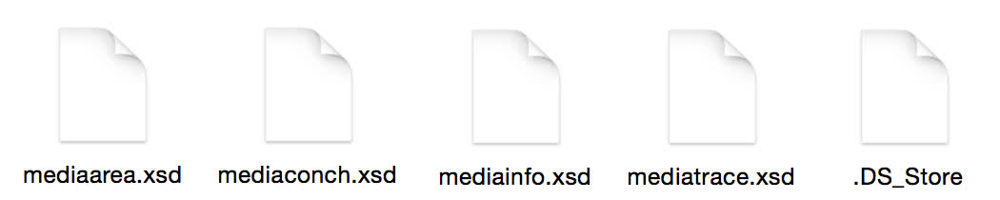

Validate Your Digital Assets: PREFORMA, MediaConch and File Compliance
#amia15 | Portland, Oregon
@dericed || @ablwr
MediaArea
The MediaArea squad
Dave Rice, Jerome Martinez
Ashley Blewer, Tessa Fallon, Erik Piil
Guillaume Roques, Florent Tribouilloy
... and The Formats
EBML/MKV
EBML
Matroska is based on Extensible Binary Meta Language <Eߣ
1
1
4
8
matroska
4
2
Matroska
Matroska is based on Extensible Binary Meta Language <Eߣ
...
🔍
ℹ️💁
🎬
📺🎶🎉🎥
🕑🕔⏰
💌
📖
📃©
FFV1 profile
FFV1 version 3
... archivists ...
... multithreaded ...
... frame crcs (mandatory) ...
... slice crcs (options) ...
... self-descriptive ...
... documentation ...
FFV1 frame
230
4
4
1
24
FFV1
48
0
0
0
0
3
4
2
...
1
8
Yes
0
0
No
1
1
2
...
...
...
...
1
0
3150640706
FFV1 slice
0
0
0
0
0
0
3
1
1
0
...
...
(16 bytes)
16
0
2919906915
🔍🐚💁🎉
MediaConch has...
many shells!
D E M O
D E M O
D E M O
D E M O
T I M E !


G U I
D E M O !

MediaTrace
You get metadata from...THE FIREHOSE!"
MediaTrace on DPX
4294967295
4294967295
255
255
0
255
0.000
0.000
0.000
0.000
0.000
0.000
0.000
0.000
0.000
0.000
(76 bytes)
...The Schemas
mediaarea.xml: container for the others
mediaconch.xml: result of implementation or policy checks
mediainfo.xml: AV summarization data
mediatrace.xml: ALL THE METADATA
.DS_Store: haunts our dreams